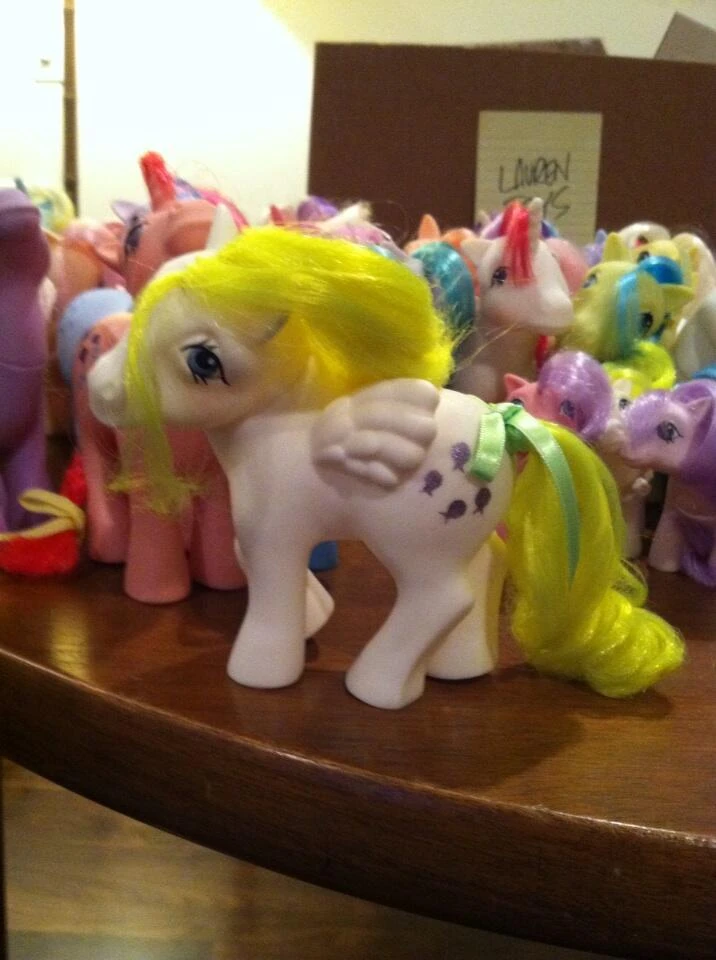
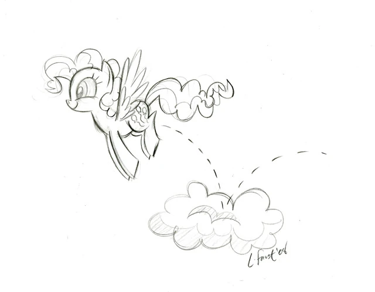
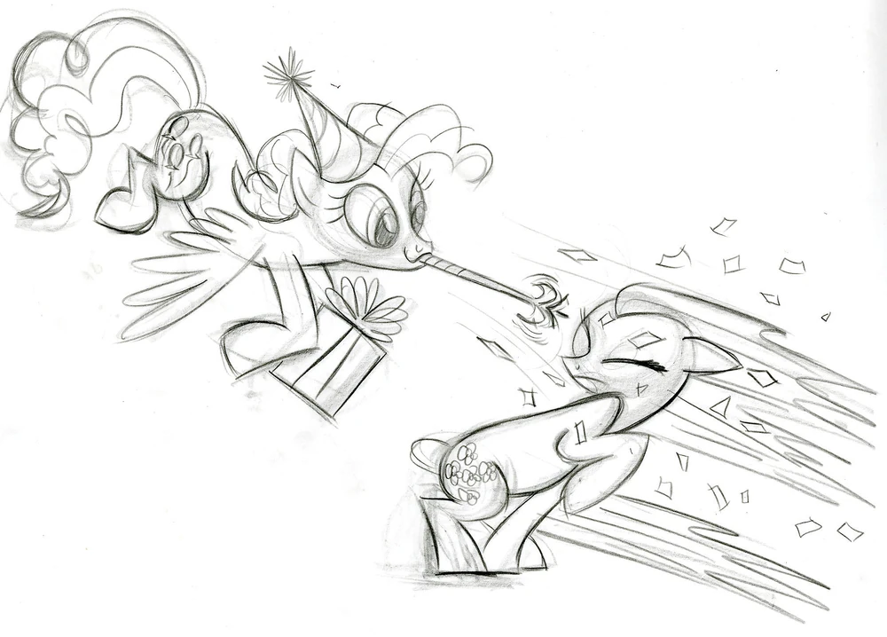
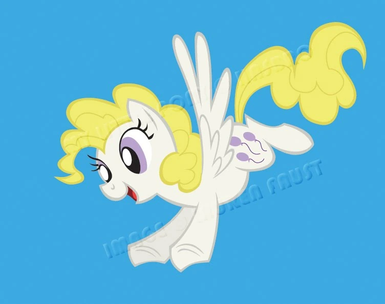

Pinkie Pie

✧ Es una pony terrestre muy alegre que le gusta mucho hacer reír y poner felices a los demás. Le encanta la pastelería y organizar fiestas. Trabaja en Sugar Cube Corner.
Su cutie mark son tres globos que representan su talento para organizar fiestas y hacer sonreir
El elemento de la armonía que ella representa es el de la risa.
Su voz original es hecha por Andrea Libman y en español latino es doblada por Melissa Gedeón
❁ ◡ ❁ ◡ ❁ ◡ ❁ ◡ ❁ ◡ ❁ ◡ ❁ ◡ ❁ ◡ ❁ ◡ ❁ ◡ ❁ ◡ ❁ ◡ ❁ ◡ ❁ ◡ ❁ ◡ ❁ ◡ ❁ ◡ ❁ ◡ ❁
Diseño
Para Pinkie Pie, Lauren Faust se basó en el de la G1 Surprise. Como se puede ver, el diseño principal de Pinkie era un pegaso, pero luego intercambiaron tipos con Fluttershy:
|  |  |
|  |  |